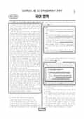

문제지

전국연합학력평가 · 시·도교육청 주관
2026년 3월 고2 학력평가 국어 1등급컷은 원점수 87점(추정), 표준점수 최고점은 148점입니다.
원점수 1등급컷은 공식 발표값이 아니라 EBSi·입시기관 값입니다. 등급별 값은 등급컷 표, 출처 구분은 데이터 원칙에 있습니다.

시험지를 먼저 풀어 보세요. 등급컷·표준점수·난이도는 흐리게 가려 뒀어요.
| 등급 | 원점수 | 표준점수 | 백분위 | 누적 |
|---|---|---|---|---|
| 1 | 87 | 136 | 96 | 4.03% |
| 2 | 78 | 127 | 89 | 11.79% |
| 3 | 67 | 116 | 76 | 24% |
| 4 | 56 | 106 | 60 | 40.86% |
| 5 | 43 | 93 | 39 | 60.13% |
| 6 | 31 | 82 | 22 | 78.12% |
| 7 | 23 | 74 | 10 | 90.05% |
| 8 | 19 | 70 | 4 | 96.21% |
등급별 컷 · 입시기관 3곳 원점수 추정 종합(EBSi·메가스터디·대성마이맥) · 만점 100점
| 등급 | 표준점수 이상 | 인원(명) | 비율 |
|---|---|---|---|
| 1 | 136 | 13,866 | 4.1% |
| 2 | 127 | 23,981 | 7.09% |
| 3 | 116 | 43,311 | 12.81% |
| 4 | 106 | 54,547 | 16.14% |
| 5 | 93 | 70,309 | 20.8% |
| 6 | 82 | 60,818 | 17.99% |
| 7 | 74 | 36,852 | 10.9% |
| 8 | 70 | 22,659 | 6.7% |
| 9 | 51 | 11,677 | 3.45% |
시·도교육청 공개 자료
출처: 시·도교육청이 공개한 전국연합학력평가 성적 분석·통계자료(공개 자료 보기).
EBSi 응답자 기준으로 가장 많이 틀린 문항은 22번(3점)이고, 오답률은 72.4%입니다. 상위 15문항 중 2문항은 정답보다 한 오답을 고른 사람이 더 많았습니다(22번: 정답 ② 27.6%, ⑤ 35.5%). 오답률 50%를 넘은 문항은 7개입니다.
| 순위 | 문항 | 배점 | 오답률 | 정답 | 많이 고른 오답 |
|---|---|---|---|---|---|
| 1 | 22번 | 3점 | 72.4% | ② | ⑤ 35.5% |
| 2 | 13번 | 3점 | 70.2% | ② | ① 23.4% |
| 3 | 21번 | 2점 | 67.2% | ① | ③ 27.3% |
| 4 | 45번 | 3점 | 60.3% | ⑤ | ③ 39.9% |
| 5 | 35번 | 2점 | 60.1% | ① | ⑤ 25.5% |
| 6 | 17번 | 3점 | 60% | ④ | ② 19.4% |
| 7 | 26번 | 2점 | 55.2% | ⑤ | ④ 28.5% |
| 8 | 16번 | 2점 | 48.5% | ① | ② 22.1% |
| 9 | 34번 | 2점 | 48.3% | ② | ④ 33.2% |
| 10 | 12번 | 2점 | 45.2% | ③ | ④ 16.3% |
| 11 | 38번 | 3점 | 45.1% | ④ | ③ 19.9% |
| 12 | 40번 | 2점 | 43.8% | ⑤ | ③ 17.9% |
| 13 | 43번 | 2점 | 41.7% | ③ | ① 13.9% |
| 14 | 8번 | 2점 | 41.5% | ① | ② 26% |
| 15 | 44번 | 2점 | 40.9% | ① | ④ 15% |
EBSi 가채점 응답자 기준 · 전 문항 중 오답률 상위 15문항
출처: EBSi 역대 등급컷·오답률 공개 화면. 가채점에 참여한 EBSi 이용자 응답이라 전체 응시자 정답률과는 다를 수 있습니다.
발행 기관: 시·도교육청(전국연합학력평가). 파일 위치: 이 사이트가 보관한 사본. 저작권은 발행 기관에 있습니다. 원본과 다르거나 게시 중단이 필요하면 연락처로 알려 주세요. 등급컷 출처 구분은 데이터 원칙에서 설명합니다.
막대 색은 역대 대비 난이도 · 진한 막대가 이 시험 · 막대를 누르면 그 회차로 이동
| 회차 | 1등급컷 | 표점 최고 | 1등급 표점 | 난이도 |
|---|---|---|---|---|
| 3월 학평2026년 고2이 시험 | 87 | 148 | 136 | 보통 |
| 10월 학평2025년 고2 | 90 | 140 | 132 | 쉬움 |
| 9월 학평2025년 고2 | 86 | 147 | 134 | 보통 |
| 6월 학평2025년 고2 | 89 | 144 | 134 | 보통 |
| 3월 학평2025년 고2 | 89 | 146 | 136 | 쉬움 |
| 10월 학평2024년 고2 | 84 | 151 | 136 | 매우 어려움 |
| 9월 학평2024년 고2 | 89 | 144 | 134 | 쉬움 |
| 6월 학평2024년 고2 | 87 | 149 | 137 | 어려움 |
| 3월 학평2024년 고2 | 77 | 163 | 137 | 매우 어려움 |
| 9월 학평2023년 고2 | 85 | 149 | 135 | 어려움 |
국어는 교육청 채점 결과 1등급 구분 표준점수가 136점, 최고점이 148점(425명)이었고 EBSi 가채점 응답자 기준 오답률 50%를 넘은 문항이 7개였습니다.
18~23번은 개별 생명체를 목적론적 삶의 중심으로 본 테일러의 생명 중심 윤리와 레오폴드의 대지 윤리를 다룬 지문입니다. 가장 많이 틀린 22번(3점, 72.4%)은 하천 변을 덩굴로 뒤덮어 다른 식물의 생육을 막는 식물 A를 제거하려는 계획을 두 입장에서 판단하는 문항, 21번(67.2%)은 도덕적 의무의 대상을 어디까지 넓힐지를 둘러싼 학생들의 대화를 판단하는 문항이었습니다.
11~13번은 매매 계약 이행 중 당사자 책임 없이 물품이 멸실·훼손되었을 때 위험을 누가 부담하는지 다룬 지문으로, 운송이 포함된 국제 매매 사례 메모를 해석하는 13번(3점, 70.2%)이 어려웠습니다. 14~17번은 물질마다 다른 전자 친화도와 마찰 전기를 다룬 지문으로, 바람개비로 비닐과 유리를 마찰시키는 마찰 전기 나노 발전기 실험 <보기>의 17번(60.0%)이 까다로웠습니다.
문학은 별선과 학공이 등장하는 「김학공전」(31~33번), 「덴동어미화전가」와 '성의관', '팔덕문' 같은 가상의 관문으로 유교 윤리를 빗댄 박인로 「자경」 등(34~38번), 친일 인사 집안과의 약혼을 둘러싼 송기숙 「도깨비 잔치」(39~42번), 이동순 「필라멘트」와 이문재 「마지막 느림보 - 산책시 3」(43~45번)이었습니다. 「자경」을 <보기>로 이해하는 35번(60.1%)과 (나)·(다)를 감상하는 45번(60.3%)이 어려웠습니다.
화법·작문은 의문문을 다룬 발표(1~3번), 폐전지 분리배출 활성화 방안 토의(4~6번), 정부 예산을 다룬 건의문(24~27번), 학교 앞 자전거·보행자 겸용 도로 안전 실태 보고서(28~30번)였습니다.